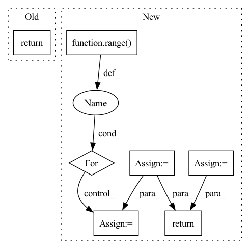

Pattern ID :24672
Before Change
def forward(self, token):
x = self.bert(token).pooler_output
x = self.linear(x)
return x
def evaluate(self, batch, metric_function):
token, label = batchAfter Change
current_device = input_ids.device
x = self.bert(input_ids=input_ids, attention_mask=attention_masks, token_type_ids=segment_ids).last_hidden_state
batch_size, max_token_len, embedding_dim = x.shape
valid_x = torch.zeros(batch_size, max_token_len, embedding_dim, dtype=torch.float, device=current_device)
for i in range(batch_size):
pos = 0
for j in range( max_token_len):
if valid_masks[i][j].item() == 1:
valid_x[i][pos] = x[i][j]
pos += 1
valid_x = self.linear(valid_x)
return valid_x
def evaluate(self, batch, metric_function):
input_ids, attention_masks, segment_ids, valid_masks, label_ids, label_masks, words_len = self.get_batch(batch)In pattern: SUPERPATTERN
Frequency: 4
Non-data size: 7
Instances Fragment ID: 76513164
Project Name: cognlp/cogktr
Commit Name: 07b44fcf057cd77c323c0e3084f112cbf33fc1c9
Time: 2022-06-08
Author: 2113809110@qq.com
File Name: cogktr/models/base_sequence_labeling_model.py
M Class Name: BaseSequenceLabelingModel
N Class Name: BaseSequenceLabelingModel
M Method Name: forward(5)
N Method Name: forward(2)
M Parent Class: BaseModel
N Parent Class: BaseModel
M File Name: cogktr/models/base_sequence_labeling_model.py
N File Name: cogktr/models/base_sequence_labeling_model.py
M Start Line: 27
M End Line: 30
N Start Line: 51
N End Line: 63
Before Change
xij = squareform(pdist(X, "euclidean"))
set_trace()
return cost, grad
def train(self, X, y):
Trains NCA until convergence.After Change
def _objective_func(self, A, X, y, y_mask):
N, D = X.shape
A = A.reshape(-1, D)
// compute pairwise squared Euclidean distances
// in transformed space
distances = squareform(pdist(X @ A.T, "sqeuclidean"))
// compute pairwise probability matrix p_ij
// defined by a softmax over negative squared
// distances in the transformed space.
// since we are dealing with negative values
// with the largest value being 0, we need
// not worry about numerical instabilities
// in the softmax function
p_ij = self._softmax(-distances)
// for each p_i, zero out any p_ij that
// is not of the same class label as i.
p_ij_mask = p_ij * y_mask
// sum over js to compute p_i
p_i = np.sum(p_ij_mask, axis=1)
// compute expected number of points
// correctly classified by summing
// over all p_i"s
p_total = np.sum(p_i)
// to maximize the above expectation
// we negate it and minimize it
loss = -p_total
// compute the gradient of the cost function
// with respect to A
outer_sum1 = np.zeros((D, D))
outer_sum2 = np.zeros((D, D))
for i in range( N):
diff = X[i] - X
p = p_ij[i]
outer_sum1 += (p_i[i] * np.einsum("i,ij,ik->jk", p, diff, diff))
p = p_ij_mask[i]
outer_sum2 += np.einsum("i,ij,ik->jk", p, diff, diff)
grad = 2 * A @ (outer_sum1 - outer_sum2)
return loss, grad.ravel()
def train(self, X, y):
Trains NCA until convergence. Fragment ID: 76513178
Project Name: kevinzakka/torchnca
Commit Name: 32ad8306d3e4c09b74456cc5a1788f8b7971f7e4
Time: 2020-01-26
Author: kevinarmandzakka@gmail.com
File Name: nca.py
M Class Name: NCA
N Class Name: NCA
M Method Name: _objective_func(5)
N Method Name: _objective_func(5)
M Parent Class:
N Parent Class:
M File Name: nca.py
N File Name: nca.py
M Start Line: 54
M End Line: 83
N Start Line: 58
N End Line: 102
Before Change
// if t % self.update_each == 0:
// self.eprop._make_optim_step()
self.eprop._make_optim_step()
x_pred = torch.stack([t.cpu() for t in x_pred], dim=1)
pvar = PVarianceLoss()(x_pred, self.true_time_series.to(x_pred.device))
mse = torch.nn.MSELoss()(x_pred, self.true_time_series.to(x_pred.device))
progress_bar.set_postfix({"pvar": to_numpy(pvar).item(), "MSE": to_numpy(mse).item()})
pvars.append(to_numpy(pvar).item())
mses.append(to_numpy(mse).item())
return x_pred, self.true_time_series
def compute_learning_signals(self, error: torch.Tensor):
learning_signals = []After Change
mse_func = torch.nn.MSELoss()
// self.eprop.optimizer.zero_grad()
self.model = SequentialRNN(
layers=[reservoir, output_layer],
foresight_time_steps=self.true_time_series.shape[-2],
out_memory_size=self.true_time_series.shape[-2],
device=reservoir.device
).build()
self.eprop.start(self)
for _ in progress_bar:
self.eprop.on_train_begin(self)
self.eprop.on_batch_begin(self)
inputs = self.true_time_series[:, 0, :].clone().unsqueeze(1).to(self.model.device)
x_pred = self.model.get_prediction_trace(inputs)
self.current_training_state = self.current_training_state.update(pred_batch=x_pred)
self.eprop.on_batch_end(self)
self.eprop.on_train_end(self)
pvar = PVarianceLoss()(x_pred, self.true_time_series.to(x_pred.device))
mse = torch.nn.MSELoss()(x_pred, self.true_time_series.to(x_pred.device))
progress_bar.set_postfix({"pvar": to_numpy(pvar).item(), "MSE": to_numpy(mse).item()})
pvars.append(to_numpy(pvar).item())
mses.append(to_numpy(mse).item())
val_pvars = []
inputs = self.raw_time_series[:, 0, :].clone().unsqueeze(1).to(self.model.device)
for _ in range( 100):
val_x_pred = self.model.get_prediction_trace(inputs)
pvar = PVarianceLoss()(val_x_pred, self.raw_time_series.to(val_x_pred.device))
val_pvars.append(to_numpy(pvar).item())
print(f"Validation PVariance: {np.mean(val_pvars):.3f}")
return x_pred, self.raw_time_series
def compute_learning_signals(self, error: torch.Tensor):
learning_signals = [] Fragment ID: 76513142
Project Name: neurotorch/neurotorch
Commit Name: da8d4065502c761ccf6e28e47dd189e3b5488140
Time: 2023-01-31
Author: 50332514+JeremieGince@users.noreply.github.com
File Name: src/neurotorch/learning_algorithms/debug_e_prop_v5.py
M Class Name: SimplifiedEpropFinal
N Class Name: SimplifiedEpropFinal
M Method Name: train(4)
N Method Name: train(4)
M Parent Class:
N Parent Class:
M File Name: src/neurotorch/learning_algorithms/debug_e_prop_v5.py
N File Name: src/neurotorch/learning_algorithms/debug_e_prop_v5.py
M Start Line: 120
M End Line: 153
N Start Line: 115
N End Line: 144
Before Change
gx.strides[3], gx.strides[4]),
writeable=False,
)
tx = np.ravel(tx).reshape(tx.shape)
tw = w.reshape(ctx.groups, rcout, cin, H, W)
ctx.save_for_backward(tx, tw, x.shape)
return np.einsum("igjYXyx,gkjyx -> igkYX", tx, tw).reshape(bs, cout, oy, ox)
@staticmethod
def backward(ctx, grad_output):After Change
tw = w.reshape(ctx.groups, rcout, cin, H, W)
ctx.save_for_backward(tx, tw, x.shape)
//ret = np.einsum("igjYXyx,gkjyx -> igkYX", tx, tw).reshape(bs, cout, oy, ox)
ret = np.zeros((bs,ctx.groups,rcout,oy,ox),dtype=x.dtype)
for g in range( ctx.groups):
//ijYXyx,kjyx -> iYXk ->ikYX
ret[:,g]+= np.moveaxis(np.tensordot(tx[:,g], tw[g],((1,4,5),(1,2,3))),3,1)
return ret.reshape(bs, cout, oy, ox)
@staticmethod Fragment ID: 76513216
Project Name: geohot/tinygrad
Commit Name: af5a4e0f5a3be62bd29e0220e1acee09be808645
Time: 2020-11-02
Author: 65973015+marcelbischoff@users.noreply.github.com
File Name: tinygrad/ops.py
M Class Name: Conv2D
N Class Name: Conv2D
M Method Name: forward(5)
N Method Name: forward(5)
M Parent Class: Function
N Parent Class: Function
M File Name: tinygrad/ops.py
N File Name: tinygrad/ops.py
M Start Line: 175
M End Line: 185
N Start Line: 172
N End Line: 189